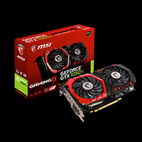
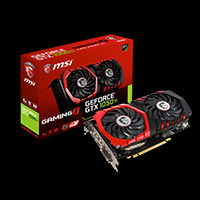

In informatica ed elettronica una scheda video è un componente hardware del computer, sotto forma di scheda elettronica che ha lo scopo di elaborazione del segnale video ovvero generare, a partire da un segnale elettrico in input dal processore, un determinato segnale elettrico in output che possa essere poi inviato in input a video (display o monitor)
Una scheda madre (plurale schede madri[1]) anche scheda di sistema, in lingua inglese motherboard ("scheda madre") mainboard ("scheda principale"), o meno conosciuta come planar board (scheda piana), abbreviata MB, M/B, mobo, in elettronica e informatica, è un tipo di scheda elettronica principale
Il corpo del comoscio si è perfettamente adattato al suo ambiente. Le sue zampe sono robuste e muscolose ed il passo è molto lungo perchè è privo di clavicole che gli consentono di saltare con grande facilità sulle pareti rocciose delle vette. Inoltre la conformazione particolare degli arti e la disposizione obliqua delle scapole gli procura un effetto molla.
In informatica ed elettronica l'unità di elaborazione o processore è un tipo di dispositivo hardware del computer che si contraddistingue per essere dedicato all'esecuzione di istruzioni, a partire da un instruction set. In altri termini l'unità di elaborazione è il d